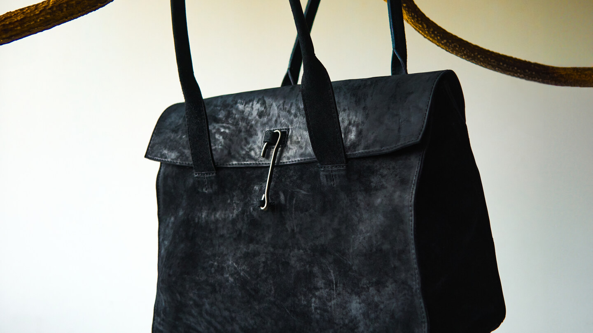

Nº 3 / 5
라벨 한 장에 두 종류의 글씨가 있다. 눌러 찍은 것과, 손으로 적은 것.
2026. 08. 21
가방 안쪽에 손바닥만 한 탠 가죽이 크림색 실로 꿰매져 있다. 거기 적힌 것을 읽으려면 가방을 열고 안감 쪽으로 손을 넣어야 한다. 사는 사람도 잘 보지 않는 자리다.
라벨에 눌러 찍힌 글자는 넷이다. tagliovivo × tOM, MADE IN ITALY, PRODUCTION YEAR, 그리고 Nº.
앞의 둘은 이름이고, 뒤의 둘은 비어 있는 칸이다.

라벨은 물건보다 먼저 만들어진다. 연도도 번호도 그때는 알 수 없다. 그래서 그 자리를 비워 두고, 물건이 완성된 다음에 사람이 채운다. 이 가방의 칸에는 잉크로 2024, 그리고 3/5라고 적혀 있다.
다섯 점 중 세 번째.

이 촬영에는 라벨이 읽히는 컷이 두 장 있다. 하나는 3/5, 다른 하나는 9/10이다. 같은 이름이 찍힌 두 물건의 번호가 서로 다르다. 숫자는 브랜드에 붙는 것이 아니라 물건 하나하나에 붙는다.
숫자가 손글씨라는 사실이 말해 주는 것은 정성이 아니라 수량이다. 백 개를 만들었다면 손으로 적지 않았을 것이다. 손으로 적을 수 있는 만큼만 만들었다는 뜻이고, 그 수를 라벨에 인쇄해 둘 만큼 미리 정해 두지도 않았다는 뜻이다.


tagliovivo의 이름으로 이탈리아에서 만들어졌고, tOM이 이름을 나란히 걸었다. × 하나를 사이에 두고 두 이름이 같은 크기로 눌려 있다.
tOM은 1997년부터 한남동에서 매장 하나로만 운영해 왔다. 29년 동안 온라인 판매를 하지 않았다. 그 시간 동안 이 가게가 해 온 일은 파는 일이라기보다 고르는 일에 가깝다. 번호를 손으로 적어야 할 만큼만 만들어지는 물건이 한남동 매장의 사다리에 걸려 있는 이유다.
물건을 어디에 놓느냐가 그 가게가 물건을 어떻게 보는지를 말한다. tOM은 이 가방을 사슴뿔에 걸어 두었다. 알루미늄 사다리에 걸어 두기도 했다. 진열대가 아니라 그날 거기 있던 것 위에.

Photography: Neo Kim (2024)
Text: tOM Paper